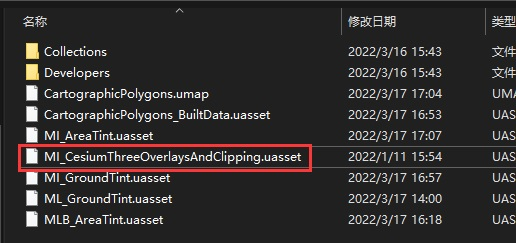
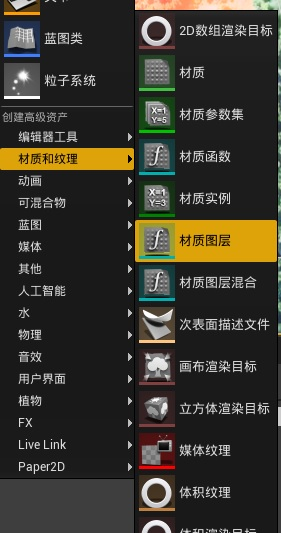

Cesium for Unreal 插件的材质被设计成模块化的，所以可以被很容易地添加和删除。
目标
- 浏览和理解现有的 Cesium for Unreal 3D Tileset 的材质
- 基于包含在 Cesium for Unreal 插件内的材质实例文件创建自定义材质
- 修改 tileset 的材质
- 了解 tileset mesh 的材质限制
Material Instances
Cesium for Unreal 通过使用 Material Instances 实现最大的灵活度，每个材质实例通过使用更多的材质图层来应用图像叠加，水，或其他材质效果。

- 图层资产：包含将显示在给定层上的材质图层节点
- 混合资产：包含一个节点，该节点确定该材质图层将如何与下面的图层混合
- 每个材质图层和材质图层混合都可以像其他材质对象一样在材质编辑器中编辑
创建应用到整个 tileset 的材质
-
在插件目录找到 MI_CesiumThreeOverlaysAndClipping 材质实例文件，并把它拷贝到项目的内容文件夹中，将其改名为 MI_GroundTint。

-
在【内容】面板右击，创建一个【材质图层】资产，并将其命名为 ML_GroundTint。

-
双击 ML_GroundTint，打开材质编辑窗口，点击【SetMaterialAttributes】节点，在【细节】面板中的【属性设置类型】数组中添加两个元素，第一个元素设置为默认值【BaseColor】，第二个元素设置为【Opacity】。
-
添加一个【Constant3Vector】节点，并右击节点，将其【转换为参数】，并命名为 Color。
-
添加一个【Constant】节点，，将其【转换为参数】，并命名为 Opacity。
-
右击 Color 节点，在【细节】面板设置默认颜色，比如红色，设置 Opacity 的默认值为 0.5。
-
将 Color 节点连接到【SetMaterialAttributes】节点的【基础颜色】，将 Opacity 节点连接到【不透明度】，如下图所示：
-
保存并关闭材质图层编辑窗口，打开 MI_GroundTint 材质实例编辑窗口，将 Overlay2 修改为 GroundTint，然后设置【图层资产】为上面的 ML_GroundTint。
-
选中关卡中的【Cesium World Terrain】actor，在【细节】面板中找到 Material 并将其设置为 ML_GroundTint，效果如下：

使用带有材质的 Cartographic Polygons
-
在插件目录找到 MI_CesiumThreeOverlaysAndClipping 材质实例文件，并把它拷贝到项目的内容文件夹中，将其改名为 MI_AreaTint。
-
在【内容】面板右击，创建一个【材质图层混合】资产，并将其命名为 MLB_AreaTint。

-
打开 MLB_AreaTint，该资产将在 Bottom Layer（使用了该 Blend Asset 的图层下面的所有材质图层）和 Top Layer（使用了该 Blend Asset 的图层）之间混合。使用 Cartographic Polygons 时，不仅仅是希望将两种材料属性均匀混合在一起。CesiumPolygonRasterOverlay 不像图像叠加一样运行。相反，我们需要设置自定义逻辑以将 Cartographic Polygon Mask 用作 Alpha 混合。


-
删除 BlendMaterialAttributes 节点并添加两个 GetMaterialAttributes 节点，再添加一个 SetMaterialAttributes 节点，最终将所有节点连接如下图所示：

-
在新建的三个节点中分别添加【属性获取类型】 BaseColor（基础颜色）。
-
添加 Color（Constant3Vector）参数节点和 Opacity（Constant）参数节点，并分别设置默认值。
-
添加 LinearInterpolate (Lerp) 节点，将 Bottom Layer 的基础颜色与我们设置的颜色参数进行线性插值混合。
-
通过 Top Layer 的 GetMaterialAttributes 节点计算 Lerp 节点的 Alpha 值，添加 BreakOutFloat3Components 节点，将 Top Layer 的基础颜色分为 RGB 3通道的值，添加 Multiply 节点，将 R 通道与 Opacity 参数相乘，并把输出结果连接到 Lerp 节点的 Alpha。最终连接效果图如下所示：
-
保存并关闭 MLB_AreaTint。
-
打开 MI_AreaTint 材质实例，找到最上面的材质图层，并将 Key 从 Clipping 修改为 Tint，并将它的【混合资产】设置为 MLB_AreaTint。

关闭并保存材质实例。
-
在场景中添加 Cesium Cartographic Polygon。
-
将 Cesium World Terrain 的 Material 设置为 MI_AreaTint。
-
在 Cesium World Terrain tileset actor 添加组件 Cesium Polygon Raster Overlay
- 在 Polygons 添加y一个元素并关联到我们添加的 Cesium Cartographic Polygon
- 取消选中 Exclude Tiles Inside
- 将 Material Layer Key 设置为 Tint

-
在添加的多边形内部的 tileset 会与我们设置的材质图层进行混色，效果如下图所示：